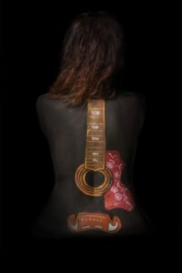
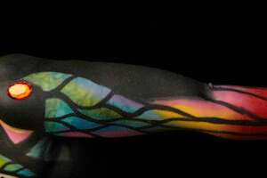
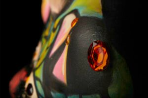
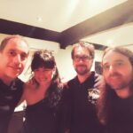
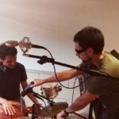
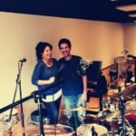

<?xml version="1.0" encoding="UTF-8"?><rss version="2.0"
	xmlns:content="http://purl.org/rss/1.0/modules/content/"
	xmlns:wfw="http://wellformedweb.org/CommentAPI/"
	xmlns:dc="http://purl.org/dc/elements/1.1/"
	xmlns:atom="http://www.w3.org/2005/Atom"
	xmlns:sy="http://purl.org/rss/1.0/modules/syndication/"
	xmlns:slash="http://purl.org/rss/1.0/modules/slash/"
	>

<channel>
	<title>Disco Contigo | Rita Valero</title>
	<atom:link href="./index.html" rel="self" type="application/rss+xml" />
	<link>../../../index.html</link>
	<description>Voz y palabras</description>
	<lastBuildDate>Tue, 18 Nov 2025 09:02:46 +0000</lastBuildDate>
	<language>ca</language>
	<sy:updatePeriod>
	hourly	</sy:updatePeriod>
	<sy:updateFrequency>
	1	</sy:updateFrequency>
	<generator>https://wordpress.org/?v=7.1.3</generator>

<image>
	<url>../../../wp-content/uploads/2021/08/cropped-favicon-rita-valero-32x32.jpg</url>
	<title>Disco Contigo | Rita Valero</title>
	<link>../../../index.html</link>
	<width>32</width>
	<height>32</height>
</image> 
	<item>
		<title>Contigo</title>
		<link>../../../project/contigo/index.html</link>
					<comments>../../../project/contigo/index.html#respond</comments>
		
		<dc:creator><![CDATA[graficart]]></dc:creator>
		<pubDate>Fri, 28 Jan 2022 07:42:54 +0000</pubDate>
				<guid isPermaLink="false">http://novaweb.ritavalero.com/?post_type=project&#038;p=270</guid>

					<description><![CDATA[Contigo es un disco con diez temas en los que se constata el momento creativo en el que se encuentra Rita Valero. Es el resultado de un año de conciertos y viajes, donde ha ido perfilando su estilo musical y también la forma expresiva de mostrar las imágenes que ha ido captando a lo largo del camino. [&#8230;]]]></description>
										<content:encoded><![CDATA[<p><strong><em>Contigo</em></strong> es un disco con diez temas en los que se constata el momento creativo en el que se encuentra <strong>Rita Valero</strong>. Es el resultado de un año de conciertos y viajes, donde ha ido perfilando su estilo musical y también la forma expresiva de mostrar las imágenes que ha ido captando a lo largo del camino. Un estilo de música que crea atmósferas.</p>
<p><strong><em>Contigo</em></strong> es toda una declaración de principios. Tiene una doble interpretación: <strong><em>Contigo</em></strong> no se refiere sólo a compartir con el otro sino también contigo misma, si estás en harmonía <strong><em>Contigo</em></strong>, surge la sabiduría interna de la intuición. Es por eso que su título sugiere compañía, pero también soledad, esto es lo que hace que todo funcione de un modo complementario: de la mezcla de lo íntimo y personal, a la confianza de compartir esos momentos y reflexiones. De este modo nacen la confianza y la complicidad contigo misma, y con el otro.</p>
<div class="wp-block-image">
<figure class="alignright size-large is-resized"></figure>
</div>
<p>Con sus letras, <strong>Rita Valero</strong> acepta el mundo tal cual es, con todas sus emociones y sentimientos, todos igualmente lícitos y valiosos, sin resignaciones ni dramas, mirando con cariño esos pequeños momentos de la vida que son los que la hacen hermosa.</p>
<p>Mientras, en lo musical, <strong><em>Contigo</em></strong> es la continuación natural del anterior álbum de <strong>Rita Valero</strong>:<strong> <em>100%.</em></strong> Si aquél era <strong><em>100%</em></strong> auténtico, éste es su cómplice, la autenticidad compartida <strong><em>100% Contigo</em></strong>, pero siempre auténtica.</p>
<p>Al igual que hizo con su primer álbum, <strong>Rita Valero</strong> decidió grabar las canciones de <strong><em>Contigo</em></strong> con una base de guitarra acústica. Llegó al estudio con unas canciones que ya habían comenzado a andar y que pedían ser grabadas.</p>
<div class="wp-block-image">
<figure class="alignleft size-large is-resized"></figure>
</div>
<p>Los otros músicos que acompañan a <strong>Rita Valero</strong> (composición, letra, música y voz) en la grabación del disco son: <strong>Jordi Carles</strong> (guitarras), <strong>Álex Gaspa</strong> (batería y percusión) y <strong>Jordi Carreras</strong> (bajo). También colaboran <strong>Pau Vázquez</strong> (violín), <strong>Pep Poblet</strong> (saxo) y <strong>Jose Domenech</strong> (piano). Finalmente <strong>Mokro </strong>(rap), ha participado en uno de los temas del disco con una aportación de cultura urbana que contrasta y enlaza perfectamente con la línea melódica de la voz principal.</p>
<div class="wp-block-image">
<figure class="alignright size-large is-resized"></figure>
</div>
<p>Todo el disco ha sido producido por <strong>Marc Martín</strong>, junto a <strong>Santi Maspons</strong>, en <strong>Estudi La Vall</strong>, y masterizado en <strong>Stering Sound</strong> (New York) por <strong>Alex Psaroudakis</strong>.</p>
<p><strong>Álex Arza</strong> firma el diseño del disco y la dirección del videoclip del primer single. <strong>Joan Agramunt</strong> es el autor de las fotografías de portada e interiores. Bodypaint a cargo de <strong>Susana Puigsegur</strong>. A todos ellos les debemos este <strong><em>Contigo</em></strong>.</p>
<p><strong>LOS TEMAS DE CONTIGO</strong></p>
<div class="wp-block-image">
<figure class="alignleft size-large is-resized"></figure>
</div>
<p><strong>CONTIGO</strong> Es el tema que da título al disco. Ese momento de intimidad que se da debajo de las sábanas, donde parece que el tiempo no pase, pero hay que seguir respirando. Ese momento que pintamos de colores, ese aprendizaje de los primeros momentos, del descubrimiento del otro, y del propio. Con un saxo de lo más seductor y una melodía tenue que reclama cierto punto de sofisticación.</p>
<p><strong>SIEMPRE JUNTAS</strong> Narra la historia de dos hermanas que aprendieron a robar desde pequeñas, y en su último golpe, una de ellas es capturada. Ensalza la lealtad por encima del beneficio individual. En lo musical es como una máquina de tren, que no para, que no se detiene, puede pasar lo que sea, pero aquí estaré, esperándote, para disfrutar contigo lo que hemos conseguido juntas, aunque sea más tarde.</p>
<div class="wp-block-image">
<figure class="alignright size-large is-resized"></figure>
</div>
<p><strong>ES TRISTEZA</strong> Es un reclamo a darle a la tristeza el lugar y la importancia que le corresponden. Es un sentimiento de lo más lícito, necesario, real. Basta de decir “no estés triste”. Ahora toca estarlo, pues disfrutémoslo. En lo musical, se muestra esta disyuntiva con acordes mayores y con el punteo de una canción dentro de otra canción.</p>
<p><strong>AGUA</strong> Líquido elemento que está en todas partes: forma parte de nosotros y de la naturaleza, del planeta, del mundo. El mundo que suena amortiguado cuando estás en el agua, el agua que forma parte de ti, y se altera con los cambios del mundo.</p>
<div class="wp-block-image">
<figure class="alignleft size-large is-resized"></figure>
</div>
<p><strong>DESCARADA</strong> Es la parte tribal del disco. Ese escaparate de emociones que nos nacen cuando empezamos a tocar en directo, un poco por la necesidad de llevar el ritmo, de hacer algo para despertar nuestra parte latente, ansiosa, que no renuncia ni a los susurros ni a gritar de vez en cuando. Con una energía que parece que va a estallar pero que nunca lo hace, como una tormenta que acecha pero nunca rompe. Percusión y voz, en estado puro. Ningún instrumento más. ¿Te atreves a llevar el ritmo?</p>
<p><strong>ES ASÍ</strong> Es una canción en espiral, sin principio ni final. Con una estructura atípica, que se repite, y queda enmarcada por las rimas de la cultura urbana, sincera, de la calle. Es así, así es la vida, así se construye el mundo. La letra describe el yin y el yang, dos energías opuestas que se necesitan y se complementan, la existencia de una depende de la existencia de la otra. Son complementarias. En la música se ve reflejado por el juego de voces entre Mokro y Rita.</p>
<p><strong>CUANDO TU PELO</strong> De fuera a dentro y también al revés. Canción para escuchar, no para oír. De delicado gusto, buscando lo pequeño, ideada con cariño. Canción para detener al corazón. Sensibilidad para estos tiempos tan insensibles.</p>
<div class="wp-block-image">
<figure class="alignright size-large is-resized"></figure>
</div>
<p><strong>BRUJA </strong>Esta canción nació de la necesidad de reclamar el propio espacio y la propia toma de decisiones. Tener las cosas claras no siempre es bien recibido en esta sociedad. Habla de sabios y brujas al estilo de un tango libre que acaba con un conjuro final. En realidad es una provocación. Su música también.</p>
<p><strong>DELITO</strong> O como algunas personas creen conocer a otras y quieren que encajen en las interpretaciones que ellos tienen de la vida, sin poder sostener que se dé un giro inesperado y se viva su propia versión. Quien viaja dentro de ti eres tú.</p>
<p><strong>POBRE DIABLO</strong> Esta es la historia de un vagabundo, que tiene sueños, como cualquiera de nosotros. Imagina que energéticamente todo el universo está unido, en realidad todos estamos hechos de lo mismo, aunque en diferentes proporciones. Todos somos uno.</p>
]]></content:encoded>
					
					<wfw:commentRss>../../../project/contigo/feed/index.html</wfw:commentRss>
			<slash:comments>0</slash:comments>
		
		
			</item>
		<item>
		<title>Grabando nuevo álbum</title>
		<link>../../../project/506/index.html</link>
					<comments>../../../project/506/index.html#respond</comments>
		
		<dc:creator><![CDATA[Rita Valero]]></dc:creator>
		<pubDate>Sun, 12 Dec 2021 21:44:53 +0000</pubDate>
				<guid isPermaLink="false">http://novaweb.ritavalero.com/?post_type=project&#038;p=506</guid>

					<description><![CDATA[Componiendo, tocando, probando,…. guitarra y voz en mano,…. entre bolo y bolo,…. así empezó esta nueva aventura, que hoy puedo llamar Nuevo Disco. Con la ilusión de contar como productor, con Marc Martín supervisando tema a tema todo lo que le iba enviando. Grabando en casa, sólo con mi guitarra y mi voz, los temas propuestos [&#8230;]]]></description>
										<content:encoded><![CDATA[<p>Componiendo, tocando, probando,…. guitarra y voz en mano,…. entre bolo y bolo,…. así empezó esta nueva aventura, que hoy puedo llamar Nuevo Disco.</p>
<p>Con la ilusión de contar como productor, con Marc Martín supervisando tema a tema todo lo que le iba enviando.</p>
<p>Grabando en casa, sólo con mi guitarra y mi voz, los temas propuestos para este álbum.</p>
<p>Hasta que llegó el momento de ponernos manos a la obra, en el Estudi La Vall.</p>
<pre>Produciendo el nuevo álbum de Rita Valero en Estudi La Vall.

¡Encantada y muy emocionada con la grabación del nuevo álbum! 
Grandes profesionales a mi lado. 
Disfrutando de cada momento, de cada nota, de cada instante de música compartido.</pre>
<p>El primer día fue muy especial, llegar al estudio, <strong>Marc Martín</strong>, <strong>Santi Maspons</strong> y <strong>Nacho Fisac</strong>, con todo preparado, y grabar las bases de la guitarra acústica con el magnífico <strong>Jordi Carles</strong>. Nos entendimos al primer guiño.</p>
<pre>
Guitarras con Jordi Carles, ¡magnífico!</pre>
<p>Después vino la parte percutiva: <strong>Álex Gaspa</strong> hizo que saliera toda mi emoción, al son de su peculiar manera de tocar la batería percutida.</p>
<pre>
Álex Gaspa a la batería y a la percusión. ¡Un grande!</pre>
<p>Desde Inglaterra viajó <strong>Jordi Carreras</strong>, para colaborar también en este proyecto con su mano izquierda al bajo.</p>
<pre>
Bajo en mano, sensacional la colaboración de Jordi Carreras. ¡Gracias!</pre>
<p>Y llegó el día de grabar mi voz…. qué gran emoción. Cada instante lo he disfrutado al máximo.</p>
<pre>
Gravando mi voz.... ¡¡fantástica experiéncia!!</pre>
<p>Las rimas de <strong>Mokro</strong>, acabaron de adornar uno de mis temas.</p>
<pre>
Gran colaboración de un buen amigo, un privilegio contar contigo, Mokro. 
Me siento afortunada.</pre>
<p>Y a continuación llegaron los sorprendentes <strong>Pep Poblet</strong>, con su seductor saxo, y <strong>Pau Vázquez</strong>, con su violín de toques celtas.</p>
<pre>El violín de Pau Vázquez y el saxo de Pep Poblet. 
Me quito el sombrero delante de estos dos maestros, que han colaborado 
en algunos de los temas del disco. ¡Muchísimas gracias!

Sr. Pau Vázquez, te propuse un gran reto, 
y supiste extraer de tu violín un estilo entre celta y brujil, 
que recordaré ¡con una gran sonrisa!</pre>
<pre>
Sr. Pep Poblet, su manera de tocar el saxo me apasiona. 
Gran privilegio, gran colaboración. Feliz, feliz, feliz.</pre>
<p><strong>Jordi Carles</strong> volvió para cerrar el ciclo, y dar los últimos toques con la guitarra eléctrica.</p>
<pre>
Los toques finales con la guitarra de Jordi Carles, reencuentro esencial.</pre>
<p>Y para acabar, las notas de <strong>Jose Domenech</strong> al piano.</p>
<p>Realmente estoy muy contenta e ilusionada con el resultado que de momento se ve al trasluz.</p>
<p>El gran trabajo con las mezclas de la mano de <strong>Marc Martín</strong> y <strong>Santi Maspons</strong>. (Marc, no expliques que se me escapó una lágrima al oír uno de los temas).</p>
<pre>
Escuchando las mezclas finales. ¡¡¡¡Qué nervios, esto ya casi está listo!!!!</pre>
<p><span id="fbPhotoSnowliftCaption" class="fbPhotosPhotoCaption" tabindex="0" data-ft="{"><span class="hasCaption">Y la próxima parada: <a href="http://sterling-sound.com/" target="_blank" rel="noopener">Sterling Sound</a>, en New York para hacer las mezclas con <a href="http://www.alexpsaroudakis.com/#alex-mastering" target="_blank" rel="noopener">Alex Psaroudakis</a>.</span></span></p>
<p>Confiando que todo suene igual de bonito que en mi interior….</p>
<p>Aprendiendo mucho….</p>
<p>Con muchas ganas de compartirlo <em>Contigo</em>!</p>
<p></p>
]]></content:encoded>
					
					<wfw:commentRss>../../../project/506/feed/index.html</wfw:commentRss>
			<slash:comments>0</slash:comments>
		
		
			</item>
		<item>
		<title>No es frío, es Música</title>
		<link>../../../project/no-es-frio-es-musica/index.html</link>
					<comments>../../../project/no-es-frio-es-musica/index.html#respond</comments>
		
		<dc:creator><![CDATA[Rita Valero]]></dc:creator>
		<pubDate>Sun, 12 Dec 2021 21:42:14 +0000</pubDate>
				<guid isPermaLink="false">http://novaweb.ritavalero.com/?post_type=project&#038;p=503</guid>

					<description><![CDATA[Explicar las sensaciones que he tenido, es muy difícil en este momento. Quiero compartir contigo que me siento afortunada tan sólo por haber llegado hasta aquí. Para mí, es como si hoy me hubiera tocado la lotería, un regalo de reyes anticipado,…. A estas alturas te estarás preguntando: «Pero bueno, ¿qué te ha pasado?» Pues [&#8230;]]]></description>
										<content:encoded><![CDATA[<p>Explicar las sensaciones que he tenido, es muy difícil en este momento.</p>
<p>Quiero compartir contigo que me siento afortunada tan sólo por haber llegado hasta aquí.</p>
<p>Para mí, es como si hoy me hubiera tocado la lotería, un regalo de reyes anticipado,….</p>
<p>A estas alturas te estarás preguntando: «Pero bueno, ¿qué te ha pasado?»</p>
<p>Pues que ya he podido escuchar el mastering de los temas de mi nuevo disco, y sólo puedo decirte ésto:</p>
<p>&nbsp;</p>
<p style="text-align: center;">No es frío, es Música. Agradecida</p>
]]></content:encoded>
					
					<wfw:commentRss>../../../project/no-es-frio-es-musica/feed/index.html</wfw:commentRss>
			<slash:comments>0</slash:comments>
		
		
			</item>
		<item>
		<title>Fotos de colores</title>
		<link>../../../project/fotos-de-colores/index.html</link>
					<comments>../../../project/fotos-de-colores/index.html#respond</comments>
		
		<dc:creator><![CDATA[Rita Valero]]></dc:creator>
		<pubDate>Sun, 12 Dec 2021 21:40:14 +0000</pubDate>
				<guid isPermaLink="false">http://novaweb.ritavalero.com/?post_type=project&#038;p=500</guid>

					<description><![CDATA[Si alguien me lo llega a decir hace unos años, le hubiera dicho «¡Ni de broma! ¡Soy demasiado tímida para hacer eso!» Y no me lo hubiera creído, aunque me hubieran jurado y perjurado que la próxima foto de portada de mi siguiente disco sería un BodyPaint. El caso es que de lo que no [&#8230;]]]></description>
										<content:encoded><![CDATA[<p>Si alguien me lo llega a decir hace unos años, le hubiera dicho «¡Ni de broma! ¡Soy demasiado tímida para hacer eso!» Y no me lo hubiera creído, aunque me hubieran jurado y perjurado que la próxima foto de portada de mi siguiente disco sería un BodyPaint.</p>
<p>El caso es que de lo que no haces, es lo que más te arrepientes, dicen, ¿verdad? Pues adelante!, me dije. Y aquí estoy, con todo el cuerpo pintado, y llena de purpurina, de colores, de piedrecitas brillantes y de no sé cuántas cosas más.</p>
<p>Estoy contenta, me veo muy…. cómo decirlo? Guapa. Pero no guapa de bonita, sino guapa de ¡qué pasada! No sé si me explico….</p>
<p>En fin, ha sido una experiencia fantástica, un gran día. Ahora estoy tan cansada que reflexiono sobre cuando alguien comenta que las modelos «no hacen nada»…. todo trabajo tiene sus dificultades y sus qués.</p>
<p>Hoy, desde muy temprano por la mañana me he puesto en manos de <a href="http://www.susanapuigsegur.com/" target="_blank" rel="noopener">Susana Puigsegur</a>, tras varias reuniones previas, alguna que otra llamada, y un momento de histeria por mi parte al no saber qué llevar exactamente, si los zapatos amarillas o verdes (jeje). Suerte que ese momento lo he vivido a eso de la 1 de la madrugada, y nadie me ha visto corriendo con todo de cosas por el pasillo de casa.</p>
<p>Susana es una gran artista. Ha pintado y maquillado a muchos artistas también, y es muy profesional. Hacer un BodyPaint son horas y horas de pinceladas, pero no hace tanto daño como un tatoo. Mejor dicho, no hace ningún daño.Un poco de cosquillas sí, eso ya depende de la sensibilidad de la persona. El caso es que a medida que avanzaba la mañana, los trazados cogían forma y los colores brillo (con la purpurina. Por cierto, si alguien sabe cómo deshacerse definitivamente de la purpurina que me lo diga, ¡es importante!).</p>
<p>Bueno, <a href="http://www.alexarza.com/" target="_blank" rel="noopener">Alex Arza</a> lo ha documentado todo muy bien, y en breve se podrá ver el making of de la sesión.</p>
<p>Una vez pintada y maquillada, sesión de fotos en el Estudio de Can Genís. ¡Sólo me dio tiempo de comerme un pequeño bocadillo que tuvieron la gentileza de ir a buscarme! Y <a href="http://ca.eram.cat/estudis/graus-universitaris/grau-en-audiovisual-i-multimedia/ambaixadors-eram/joan-agramunt/" target="_blank" rel="noopener">Joan Agramunt</a> ya empezaba a tirar fotos.</p>
<p>Es una situación bastante extraña: ahora mira aquí, ahora allí, los brazos así o asá, vigila no te tapes el dibujo…. Suerte que todos han sido muy agradables y comprensivos, conmigo que a veces soy un poco despistada, por aquello de gírate a la izquierda, y yo hacia la derecha. Pero ¿la izquierda tuya o la mía?…. Ha sido divertido.</p>
<p>Ahora toca quitárselo todo…. me da muchísima pena. Tantas horas de trabajo, tan chulo que ha quedado…. qué lástima no poder ir así varios días…. aunque está el tema de que así hace un poco de frío.</p>
<p>Bueno, cuando me meto en la ducha y me toca el agua calentita…. sólo sonrío. Ha sido una gran jornada, sí! Ahora a elegir las mejores fotos y hacer una buena portada.</p>
<p>¡Seguimos!</p>
]]></content:encoded>
					
					<wfw:commentRss>../../../project/fotos-de-colores/feed/index.html</wfw:commentRss>
			<slash:comments>0</slash:comments>
		
		
			</item>
		<item>
		<title>Rita Valero Premio Palafrugellenca del año</title>
		<link>../../../project/rita-valero-premio-palafrugellenca-del-ano/index.html</link>
					<comments>../../../project/rita-valero-premio-palafrugellenca-del-ano/index.html#respond</comments>
		
		<dc:creator><![CDATA[graficart]]></dc:creator>
		<pubDate>Sat, 04 Dec 2021 18:03:48 +0000</pubDate>
				<guid isPermaLink="false">http://novaweb.ritavalero.com/?post_type=project&#038;p=362</guid>

					<description><![CDATA[¿Quién dijo aquella frase de «Nadie es profeta en su tierra»? Desde mi punto de vista estaba muy equivocado. Gran honor, gran gozo y gran alegría al recibir esta carta tan bonita que aquí te transcribo: &#160; EDICIONS BAIX EMPORDÀ PALAFRUGELL Palafrugell, 15 de Noviembre del 2017 Rita Valero Distinguida Sra. Tenemos el placer de [&#8230;]]]></description>
										<content:encoded><![CDATA[<p><span id="result_box" class="" lang="es"><span title="Qui va dir aquella frase de &quot;Ningú és profeta a la seva terra&quot;? ">¿Quién dijo aquella frase de «Nadie es profeta en su tierra»?</span></span></p>
<p><span title="Des del meu punt de vista estava ben equivocat! ">Desde mi punto de vista estaba muy equivocado.</span></p>
<p><span title="Gran honor, gran goig i gran alegria en rebre aquesta carta tan bonica que aquí et transcric:     ">Gran honor, gran gozo y gran alegría al recibir esta carta tan bonita que aquí te transcribo:</span></p>
<blockquote><p>&nbsp;</p>
<p><span title="EDICIONS BAIX EMPORDÀ     ">EDICIONS BAIX EMPORDÀ</span></p>
<p><span title="PALAFRUGELL     ">PALAFRUGELL</span></p>
<p><span title="Palafrugell, 15 de Novembre del 2017     ">Palafrugell, 15 de Noviembre del 2017</span></p>
<p><span title="Rita Valero     ">Rita Valero</span></p>
<p><span title="Distingida Sra.     ">Distinguida Sra.<br />
</span><span title="Tenim el goig de comunicar-li que el jurat dels Premis Peix Fregit ha pres l’acord de distingir-la enguany, juntament amb altres persones, amb el nomenament de “PALAFRUGELLENCA DE L’ANY”     ">Tenemos el placer de comunicarle que el jurado de los Premios Peix Fregit ha acordado distinguirla este año, junto con otras personas, con el nombramiento de «PALAFRUGELLENCA DEL AÑO»</span></p>
<p><span title="Aquesta distinció li ha estat concedida com a compositora i cantant, que aquest 2017 ha llançat el seu segon disc, Contigo, amb ritmes de swing, soul, bossa i blues, amb el qual ha iniciat una gira de promoció internacional.     ">Esta distinción le ha sido concedida como compositora y cantante, que este 2017 ha lanzado su segundo disco, <em>Contigo</em>, con ritmos de swing, soul, bolsa y blues, con el que ha iniciado una gira de promoción internacional.</span></p>
<p><span title="Per aquest motiu, li adrecem la nostra més sincera i cordial felicitació, alhora que esperem gaudir de la seva presència a l'acte de lliurament de premis que es farà en el transcurs de la presentació del llibre “Crònica d'un any”, el">Por este motivo, le dirigimos nuestra más sincera y cordial felicitación, al tiempo que esperamos disfrutar de su presencia en el acto de entrega de premios que se hará en el transcurso de la presentación del libro «Crónica de un año», el </span><span title="diumenge dia 17 de desembre a les 19 hores al TMP-Teatre Municipal de Palafrugell.     ">domingo día 17 de diciembre a las 19 horas en el TMP-Teatro Municipal de Palafrugell.</span></p>
<p><span title="Amb la nostra més respectuosa salutació     ">Con nuestra más respetuoso saludo</span></p>
<p><span title="Edicions Baix Empordà ">Edicions Baix Empordà<br />
</span></p></blockquote>
<p>&nbsp;</p>
]]></content:encoded>
					
					<wfw:commentRss>../../../project/rita-valero-premio-palafrugellenca-del-ano/feed/index.html</wfw:commentRss>
			<slash:comments>0</slash:comments>
		
		
			</item>
		<item>
		<title>Decisiones de principio de año</title>
		<link>../../../project/decisiones-de-principio-de-ano/index.html</link>
					<comments>../../../project/decisiones-de-principio-de-ano/index.html#respond</comments>
		
		<dc:creator><![CDATA[graficart]]></dc:creator>
		<pubDate>Sat, 04 Dec 2021 18:02:34 +0000</pubDate>
				<guid isPermaLink="false">http://novaweb.ritavalero.com/?post_type=project&#038;p=359</guid>

					<description><![CDATA[A veces me planteo cuánto te pido, mi querido valeroso. Comprar un disco, invertir un tiempo de tu vida en escucharlo, venir a horas intempestivas a conciertos en lugares a veces perdidos del mundo, (nota para el próximo año: conseguir más conciertos en horario de vermut). En fin, que te pido y te pido, y [&#8230;]]]></description>
										<content:encoded><![CDATA[<p>A veces me planteo cuánto te pido, mi querido valeroso. Comprar un disco, invertir un tiempo de tu vida en escucharlo, venir a horas intempestivas a conciertos en lugares a veces perdidos del mundo, (nota para el próximo año: conseguir más conciertos en horario de vermut). En fin, que te pido y te pido, y tú ¿qué recibes a cambio? Sí, una experiencia <strong><em>100% Conmigo</em></strong> una vivencia divertida, cultural, satisfactoria, rodeados de buena gente, de buen ambiente, de buena música. Pero aún así, mi propósito para este Año Nuevo <strong>2018</strong> es darte algo más. Un regalo de año nuevo que perdure durante todos los meses del año. Un regalo que consiste en que puedas conocerme un poquito más, querido valeroso, querida valerosa. Un regalo para ti, para que lo leas cuando puedas, cuando quieras, cuando tengas curiosidad. El día 1 de cada mes, encontrarás una nueva publicación en mi página, con anécdotas, reflexiones, propuestas y explicaciones de cómo va mi disco y mi día a día artístico+musical. Creo que te gustará, pues podrás entender y valorar mucho más (aunque sé que ya lo haces), la tarea del músico, los sinsabores por los que a veces pasamos (y que normalmente se quedan para nosotros), las alegrías que también nos das, etc.</p>
<p>De momento aquí tienes la primera publicación “<strong><em>Decisiones de principio de año</em></strong>” que seguro que te motiva para no perderte ni un detalle de lo que te vaya contando. Además, podrás ver cada día también, en exclusiva, un <strong>vídeo</strong> donde te hablaré de temas súper interesantes sobre la vida, las emociones, y cómo hago para plasmar todo eso en mis canciones. <strong>Éste es mi regalo para ti. Disfrútalo.</strong></p>
<p><strong>Gracias</strong> por estar ahí, eres muy valioso para mí. <strong>Besos</strong></p>
]]></content:encoded>
					
					<wfw:commentRss>../../../project/decisiones-de-principio-de-ano/feed/index.html</wfw:commentRss>
			<slash:comments>0</slash:comments>
		
		
			</item>
		<item>
		<title>Agua. Afectada por la Luna</title>
		<link>../../../project/agua-afectada-por-la-luna/index.html</link>
					<comments>../../../project/agua-afectada-por-la-luna/index.html#respond</comments>
		
		<dc:creator><![CDATA[graficart]]></dc:creator>
		<pubDate>Sat, 04 Dec 2021 17:59:45 +0000</pubDate>
				<guid isPermaLink="false">http://novaweb.ritavalero.com/?post_type=project&#038;p=356</guid>

					<description><![CDATA[Querida Valerosa y Querido Valeroso, «Agua» se ha convertido en el 2º single de este ‘Contigo‘ gracias a ti y a tu votación en la encuesta que publiqué en Facebook. Muchísimas gracias por tu aportación, para mi es valiosísima. Ya sabes que siempre te digo que cuento contigo, y Es Así. Jejejeje Hoy día 24 empieza [&#8230;]]]></description>
										<content:encoded><![CDATA[<p>Querida Valerosa y Querido Valeroso, «<a href="https://open.spotify.com/track/5uleh3G04DlSf0JhrtNRTS?si=kDwyeRpHRgivRri-g-3PtA" target="_blank" rel="noopener">Agua</a>» se ha convertido en el 2º single de este ‘<a href="https://open.spotify.com/album/3RNo98ESmtSxTt7cRRpyRp?si=1mevc0R9RaKt2-a7P6rBdg" target="_blank" rel="noopener">Contigo</a>‘ gracias a ti y a tu votación en la encuesta que publiqué en Facebook. Muchísimas gracias por tu aportación, para mi es valiosísima.</p>
<p>Ya sabes que siempre te digo que cuento contigo, y <a href="https://open.spotify.com/track/5FODREN1uSHOEekWraEl2e?si=mx2K42riSfiysmtqPlTjpA" target="_blank" rel="noopener">Es Así</a>. Jejejeje</p>
<p>Hoy día 24 empieza la Luna Creciente.</p>
<p>¿Te has planteado alguna vez el efecto de la Luna sobre el Agua? Yo sí. En este vídeo te lo explico.</p>
<p><a href="https://youtu.be/4QJVdRMz1gk" target="_blank" rel="noopener">AGUA. AFECTADA POR LA LUNA</a></p>
<blockquote><p><em>El Agua es el elemento común que forma parte de todos los seres vivos.</em> Rita Valero</p></blockquote>
]]></content:encoded>
					
					<wfw:commentRss>../../../project/agua-afectada-por-la-luna/feed/index.html</wfw:commentRss>
			<slash:comments>0</slash:comments>
		
		
			</item>
		<item>
		<title>Desde Suiza con Amor</title>
		<link>../../../project/desde-suiza-con-amor/index.html</link>
					<comments>../../../project/desde-suiza-con-amor/index.html#respond</comments>
		
		<dc:creator><![CDATA[graficart]]></dc:creator>
		<pubDate>Sat, 04 Dec 2021 17:57:34 +0000</pubDate>
				<guid isPermaLink="false">http://novaweb.ritavalero.com/?post_type=project&#038;p=351</guid>

					<description><![CDATA[Nueva Luna Creciente, y nuevo vídeo que comparto para tí en abierto. Ya sabes que si quieres recibirlo el día 1 de cada mes, sólo tienes que suscribirte a mi página web. Aquí una pequeña muestra de lo hermosa que es la Tierra, la mires desde el punto donde la mires, aunque estés en las [&#8230;]]]></description>
										<content:encoded><![CDATA[<p>Nueva Luna Creciente, y nuevo vídeo que comparto para tí en abierto. Ya sabes que si quieres recibirlo el día 1 de cada mes, sólo tienes que suscribirte a mi página web.</p>
<p>Aquí una pequeña muestra de lo hermosa que es la Tierra, la mires desde el punto donde la mires, aunque estés en las nubes….</p>
<p><a href="https://youtu.be/bAJJSj8QK5M" target="_blank" rel="noopener">Desde Suiza con Amor</a></p>
]]></content:encoded>
					
					<wfw:commentRss>../../../project/desde-suiza-con-amor/feed/index.html</wfw:commentRss>
			<slash:comments>0</slash:comments>
		
		
			</item>
		<item>
		<title>LA PROFUNDIDAD DE LO EFÍMERO</title>
		<link>../../../project/la-profundidad-de-lo-efimero/index.html</link>
					<comments>../../../project/la-profundidad-de-lo-efimero/index.html#respond</comments>
		
		<dc:creator><![CDATA[graficart]]></dc:creator>
		<pubDate>Sat, 04 Dec 2021 17:37:40 +0000</pubDate>
				<guid isPermaLink="false">http://novaweb.ritavalero.com/?post_type=project&#038;p=347</guid>

					<description><![CDATA[Ahora que empiezo la Gira «Rita Valero Contigo al 100%» quiero contarte algunas cosas de las que me encuentro mientras busco conciertos. Preparar una gira es un trabajo complejo, y que requiere tiempo, esfuerzo, y mucha paciencia. Te sorprenderías si supieras las situaciones por las que algunas veces pasamos los músicos. Para ilustrate sólo un [&#8230;]]]></description>
										<content:encoded><![CDATA[<p>Ahora que empiezo la <strong>Gira «Rita Valero Contigo al 100%»</strong> quiero contarte algunas cosas de las que me encuentro mientras busco conciertos. Preparar una gira es un trabajo complejo, y que requiere tiempo, esfuerzo, y mucha paciencia. Te sorprenderías si supieras las situaciones por las que algunas veces pasamos los músicos.</p>
<p>Para ilustrate sólo un poquito, voy a compartir contigo algunas de las cosas que me encuentro cuando busco bolos. (Bolos = Conciertos. Por si alguien no está familiarizado con la jerga).</p>
<p>Hay conciertos que te caen del cielo, como aquél que dice. Te llaman, te los ofrecen, el sitio es de lujo, hay equipo y técnico, te pagan tu caché, y lo tienen todo controlado. Todos firmaríamos por éstos, ¿verdad? Pues debo decirte que no son un mito, se dan, existen realmente, de verdad. Todo y que son los menos, y parecen una especie en peligro de extinción, no lo son, hay un paraíso, el paraíso de los músicos, donde existen esta clase de bolos. Ahí voy de visita de vez en cuando. Estoy pensando en alquilarme o comprarme un apartamentito en ese resort.</p>
<p>Luego están los bolos que te interesan a ti como músico, es decir, porque se hace mucha difusión y la promo puede ser muy interesante, porque el sitio es mítico, porque te interesa por lo que sea actuar en esa población porque no lo has hecho nunca, etc. Estos son los que habitualmente te tienes que “currar” un poquito más. A éstos llamas, normalmente no encuentras a la persona que se encarga de los conciertos, te dicen que dejes el recado, vuelves a llamar, nunca está, te dicen que te pases, pero si nunca está ¿cuándo le encuentro? Y aquí se despliegan infinitas posibilidades: una de ellas es que el propietario o el interlocutor, no se hace a la idea de que los músicos también pagamos la gasolina, y desplazarnos nos cuesta un dinerillo, si puedes cerrar un bolo por teléfono o mail, mucho mejor, todo y que yo soy muy defensora del trato humano, pero no me da el tiempo para visitar todos los sitios donde quiero hacer conciertos. En fin, si puedes te pasas, y ahí empieza el estira y afloja de “estamos empezando”, “mira qué pequeño es el local”, “pero tú me tienes que traer gente”…. A ver, sres. de los locales que “promueven” la música en directo: yo soy músico, ud. me contrata por hacer música. Ud. al que le proporciona las bebidas o la comida, no le dice que tiene la obligación de traerle clientela para que se coma la comida que le compra o se beba las cervezas, o los gin tónics, que tan de moda están, ¿verdad? No se le ocurriría. ¿Porqué a mí sí que me lo exige?</p>
<p>Tengo una teoría: la música no se puede palpar, no es un objeto que puedas tener en las manos, no te confundas, un cd o un pen sí que lo puedes tocar, pero la música en sí misma, es aire, se fusiona con la atmósfera, estás “vendiendo” algo efímero, estás vendiendo una experiencia, una vivencia, no un objeto. Por eso la gente se confunde, y creen que debes aportar algo físico, personas que gasten su dinero y reporten benefios al local. Y claro que sí, todos queremos ganar. Pero yo, como músico, no tengo la obligación de traerte gente. Yo te ofrezco un servicio, mi música. ¿La valoras? ¿La quieres? ¿Quieres vivir esa experiencia? Tú decides. Esto daría para escribir mucho más y no quiero detenerme sólo en este punto, pero también sé que existen músicos cara-dura que sólo van a pasar el rato como si de un ensayo o un encuentro con amigos se tratara, y eso tampoco lo veo correcto, tengo criterio. También existen locales que ni siquiera publicitan el concierto, ni ponen un cartel  o una pizarra en la puerta, y luego quieren que tú como músico se lo llenes de gente consumiendo. Entiendo que todos queremos que venga gente, el propietario y el músico, pero creo que es algo compartido, yo hago mi publicidad, mis carteles, mi difusión en prensa, etc. El dueño del local creo que debe aportar lo mismo. Y si los dos hacen su trabajo, bien recibido será, seguro. Personas del público, ¿véis lo importantes que sois? Por eso os llamo Valerosos, porque tenéis mucho valor. Siempre lo digo en mis conciertos: <strong>soís el 50% del espectáculo.</strong></p>
<p>Pero hay otras situaciones que me cabrean aún más. ¿Aún más? Sí, aún más: aquellos que te dicen que vayas a tocar, pero que no hay presupuesto.</p>
<p><strong>NO TE CONFUNDAS</strong></p>
<p>Hay conciertos que hago con mucho cariño, y sin presupuesto porque creo que lo merecen, bajo mi criterio. Por amistad, por la causa, porque me da la gana,…. Por lo que sea.<strong>* </strong>Pero que te digan en algunas ocasiones: “no hay presupuesto”, y que el que lleva el pica-pica, o el que proporciona el cava sí que cobre, me parece injusto. ¿Porqué a ellos no les dicen también “tráeme los croassans, pero no hay presupuesto”? ¿O porqué no les dicen “te pago la mitad, para poder pagar algo también a los músicos”? Volvemos a lo que te decía antes, quizá sea porque la música es efímera, no se puede tocar igual que un croassan, quizá sea eso, o quizá sea que la cultura para algunas personas, tiene menos valor que otras cosas más palpables, tal vez es un tema de educación, de valores y de <strong>RESPETO</strong>. Tal vez.</p>
<p>Lo que sí que tengo claro, es que voy a seguir haciendo música, y defendiendo la profundidad de lo efímero de un concierto, porque en lo efímero está lo perdurable, esa experiencia vivida, que cada vez que oigas esa canción, recordarás. Eso tiene un valor, aunque no un precio.</p>
<p><strong>Dale valor a la música.</strong></p>
<p><strong>* </strong>(En otro post te hablaré del 10%, el criterio que sigo para hacer conciertos POR AMOR AL ARTE).</p>
]]></content:encoded>
					
					<wfw:commentRss>../../../project/la-profundidad-de-lo-efimero/feed/index.html</wfw:commentRss>
			<slash:comments>0</slash:comments>
		
		
			</item>
		<item>
		<title>Rita Valero 4 Nominaciones a los Premios MIN</title>
		<link>../../../project/rita-valero-4-nominaciones-a-los-premios-min/index.html</link>
					<comments>../../../project/rita-valero-4-nominaciones-a-los-premios-min/index.html#respond</comments>
		
		<dc:creator><![CDATA[graficart]]></dc:creator>
		<pubDate>Sat, 04 Dec 2021 17:35:55 +0000</pubDate>
				<guid isPermaLink="false">http://novaweb.ritavalero.com/?post_type=project&#038;p=344</guid>

					<description><![CDATA[Los Premios MIN de la Música Independiente se crearon para reconocer la creación, la diversidad y la calidad artística de las producciones independientes y acercar la música público. Este año, he tenido el gran honor de formar parte de 4 de las nominaciones a estos premios: Mejor Artista, Mejor Álbum, Mejor Videoclip y Mejor Canción, todos ellos [&#8230;]]]></description>
										<content:encoded><![CDATA[<p>Los <strong>Premios MIN de la Música Independiente</strong> se crearon para reconocer la creación, la diversidad y la calidad artística de las producciones independientes y acercar la música público.</p>
<p>Este año, he tenido el gran honor de formar parte de 4 de las nominaciones a estos premios: Mejor Artista, Mejor Álbum, Mejor Videoclip y Mejor Canción, todos ellos con mi 2º disco Contigo.</p>
<p>Ha sido una experiencia fantástica, mucha ilusión y emociones, y desde aquí felicito a todos los músicos participantes, así como a los organizadores de estos premios.</p>
<p>Gracias!</p>
]]></content:encoded>
					
					<wfw:commentRss>../../../project/rita-valero-4-nominaciones-a-los-premios-min/feed/index.html</wfw:commentRss>
			<slash:comments>0</slash:comments>
		
		
			</item>
	</channel>
</rss>
